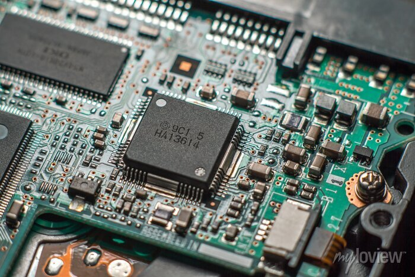

<!DOCTYPE html>
<html lang="cs">

<head>
    
    <script src="https://kit.fontawesome.com/a076d05399.js" crossorigin="anonymous"></script>
    <title> Ovladače, firmware a utility </title>
    <link rel="stylesheet" href="../css/style.css">
    <meta charset="UTF-8" />
    <meta http-equiv="X-UA-Compatible" content="IE=edge" />
    <meta name="viewport" content="width=device-width, initial-scale=1" />
    <link href="../css/style.css" rel="stylesheet" />
    <div class="topnav">
        <a class="active" href="../uvod/index.html">ÚVOD</a>
        <a href="../01/index.html">PROGRAMOVÉ A DATOVÉ SOUBORY</a>
        <a href="../02/index.html">OPERAČNÍ SYSTÉMY</a>
        <a href="../03/index.html">SOFTWAROVÉ LICENCE</a>
        <a href="../04/index.html">OVLADAČE, FIRMWARE A UTILITY</a>
        <a href="../05/index.html">APLIKAČNÍ SOFTWARE</a>
    </div>
<header>
    <h1>&#128151;Ovladače, firmware a utility&#128151;</h1>
    <ul>
        <li>K systémovému software můžeme kromě operačních systémů zařadit
            ovladače hardarových zařízení, firmware a aspoň zčásti i tzv. utility</li>
    </ul>
    
</header>

<body id="bg">
    <main>
        <h2>Ovladače zařízení</h2>
        <p>
            <strong>Ovladače zařízení</strong> (<em> device drivers </em>). Speciální programy, které zajišťují komunikaci OS s
            určitým technickým vybavením. Bez potřebného ovladače nemůže
            zařízení správně fungovat. Standardní ovladače pro běžná zařízení, jakými
            jsou flash disk, myš, klávesnice nebo digitální fotoaparáty, bývají součástí
            moderních OS. Instalaci zařízení ve Windows usnadňuje standard <strong>Plug and Play</strong> (<em>PnP -
                „připoj a hrej“</em>), který zajistí automatickou detekci nově připojeného hardware a případně i
            automatické vyhledání potřebného ovladače.</p>
        <p>Není-li
            driver nalezen přímo v OS, musí být použit externí instalátor ovladače z disku dodaného se zařízením (např.
            z instalačního CD k tiskárně), nebo stažený
            z internetových stránek, nejlépe přímo od výrobce. Nevhodně zvolený ovladač
            může v krajním případě způsobit nefunkčnost zařízení, někdy i celého OS. </p>
        <h2>Firmware</h2>
        <p> <strong>Firmware</strong>. Programové vybavení, které slouží pro řízení nějakého vestavěného systému (<em>embedded system</em>).
            Firmware řídí například kalkulačky, počítačové komponenty (pevný disk, router…), mobilní telefon, digitální
            fotoaparát atd.
            Dříve byla aktualizace firmwaru realizována nahrazením paměťového média
            obsahujícího firmware (např. výměna ROM paměti), dnes může být novější verze firmware přepsána díky
            používaným flash pamětem. Základním firmwarem
            v počítači je <strong>BIOS</strong> (<em>Basic Output-Input System</em>), který zajišťuje především start
            počítače a umožňuje konfiguraci základní desky i připojeného hardware.</p>
            <h2>Utility</h2>
            <p><strong>Utility</strong>. Jsou menší pomocné programy, které umožňují vykonávat servisní 
                operace potřebné k fungování počítače. Patří k nim komprimační programy, 
                diagnostické a testovací programy, utility pro kontrolu a optimalizaci operačního systému, různé konverzní (převodní) programy, které umí přehledně zobrazit obrázky, převést je z jednoho formátu na jiný atd. Řada utilit je integrální 
                součástí OS. Příkladem může být Správce úloh ve Windows (<em>Task Manager</em>),  
                který umožňuje nejen správu spuštěných programů a služeb, ale i sledování 
                využití systémových zdrojů (procesoru, paměti). Dalšími užitečnými utilitami 
                jsou nástroje pro defragmentaci (defrag) nebo kontrolu disku (<em>chkdsk</em>). Některé 
                utility lze spouštět z příkazového řádku (<em>ping, ipconfig apod</em>.)</p>
                
    </main>
</body>
<footer>
    <hr />
    <p>&copy; 2022 - <i>Václav Stoklasa </i> - <b>IT1</b></p>
</footer>
</html>